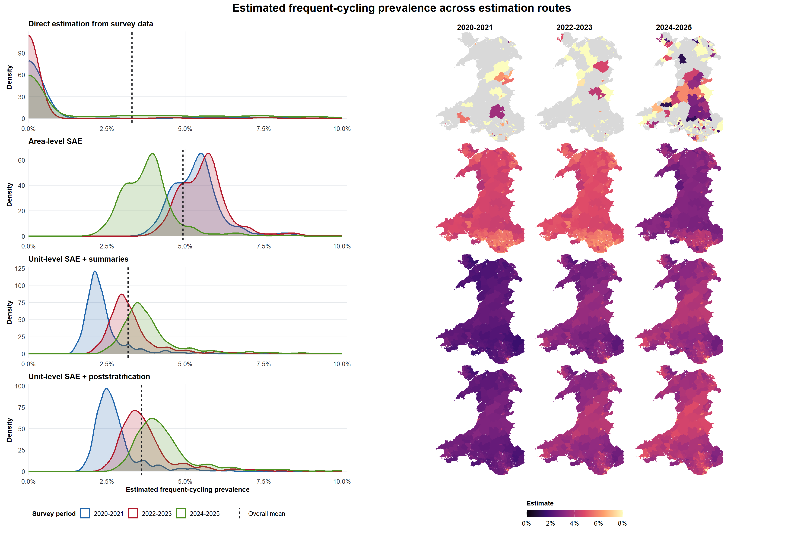
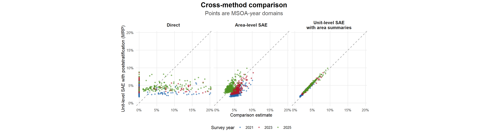
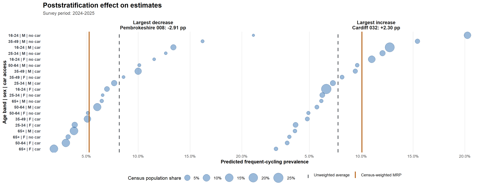
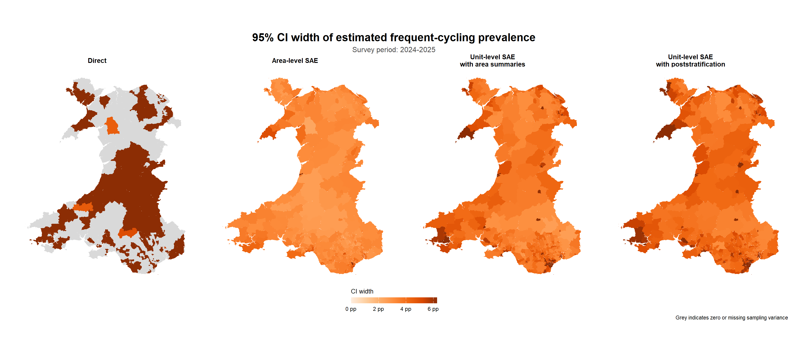
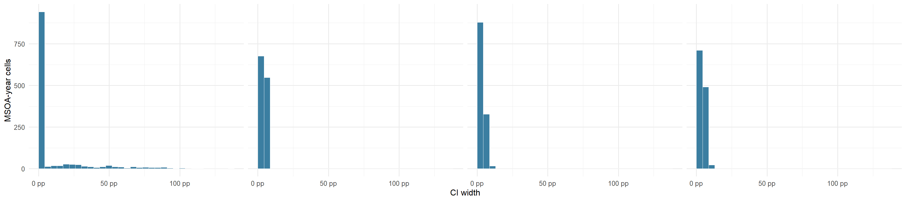
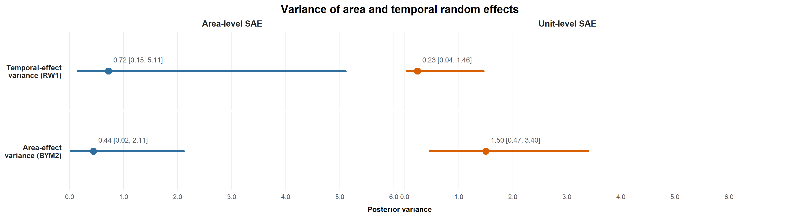
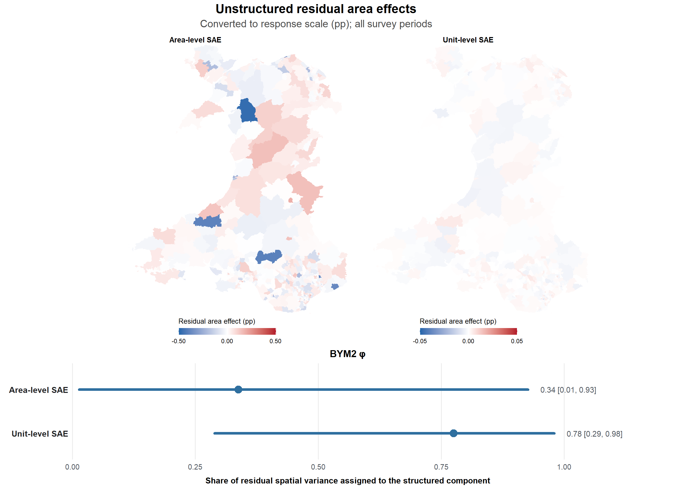

Cross method comparison
We can now compare the direct estimates and three model-based SAE approaches developed in the preceding sections in order to show how each approach changes the estimates, and their uncertainty. The comparison serve to illustrate the practical trade-offs that researchers should consider when selecting an approach for their own data and estimand.
The table below summarises the main data requirements, strengths, and limitations of each method.
| Method | Estimation approach | Aux. data requirements | Main limitation |
|---|---|---|---|
| Direct estimation | Uses survey responses within each MSOA-year cell to calculate a survey-weighted direct estimate. | None | Sparse or missing cells can produce unstable estimates or invalid sampling variances. |
| Area-level SAE | Uses direct estimates and sampling variances, then smooths them with an area-level model. | Low | Depends on the reliability of the direct estimates and their sampling variances. |
| Unit-level SAE with predictor summaries | Fits a unit-level model to survey microdata, then evaluates it using MSOA-level predictor summaries. | Moderate | Area summaries may not adequately represent the target population. Not robust for binary indicator. |
| Unit-level SAE with poststratification | Fits a unit-level model to survey microdata, predicts age-sex-car population cells, then aggregates using cell counts. | High | Adding more predictors produces suppressed cells (false population zeros). |
1 Smoothing and target population adjustment
The distribution and rank plots compare the spread of MSOA-year estimates across methods, while the maps compare the local pattern of estimated frequent cycling.
- Direct estimates are highly uneven, while model-based estimates are smoother because they borrow strength across areas, years, predictors, or poststratification cells.
- The area-level model is anchored by the direct estimates, so the strength of local survey evidence influences the modelled results. In 2025, which has the largest median sample size, the modelled estimates remain closer to the direct estimates. In the earlier waves with weaker direct evidence, the modelled estimates are much higher.
- Differences between the estimates from the two unit-level models are more subtle because they use similar models and spatio-temporal structure. Their main difference is how the individual predictions are projected to the MSOA–year level.

In a unit-level SAE workflow, poststratification changes how the predicted population cells are aggregated. By examining the two MSOAs with the largest increase and decrease after adjusting to the Census population shares, we see that the Cardiff MSOA with higher proportions of groups that are more likely to be frequent cyclists (e.g., 16-49 males with no cars) sees an upward poststratified adjustment compared to the other where there are higher proportions of groups with lower probabilities (e.g., 50+ females with access to a car).

2 Improvement in precision
Interval width summarises the uncertainty attached to each estimate. For direct estimates, interval width is driven by the sampling variance within each MSOA-year cell. Model-based approaches produce 95% credible intervals that reflect posterior uncertainty. Overall, we see a massive improvement in precision when employing a model-based SAE approach.


Narrower intervals can reflect improved precision, but they may also result from stronger smoothing and greater reliance on model-based estimates when local survey evidence is weak, as seen in the area-level model. In comparison, the marginally wider intervals from the unit-level models reflect their more fine-grained specification since here we are fitting the model over thousands of survey respondents.
3 Examining spatial and temporal effects
Spatial and temporal random effects capture residual variation not explained by the fixed predictors. Their relative contribution can differ across SAE approaches because the models use the survey data in different ways.
We compare the posterior variance of the total BYM2 area effect and the RW1 temporal effect, expressed as inverse precision, 1/\tau. For RW1, it is the variance of the temporal effect across the three survey periods. For BYM2, this is the total residual area-effect variance, including structured (i.e., spatial variation explained by the neighbourhood structure) and unstructured components. Overall, the unit-level model has a larger spatial-effect variance (i.e., stronger spatial smoothing), although both models are provided with the same neighbourhood-based spatial weight matrix. Instead, the area-level model exhibits stronger temporal smoothing due to highly uneven estimates across years.

To examine the area effects in more detail, we distinguish between the structured and unstructured components of the BYM2 model suing the mixing parameter, \phi, i.e., the proportion of residual area-effect variance assigned to the spatially structured component. The closer to zero the greater the unstructured, area-specific effects not explainable by neighbouring areas.
The area-level model has a lower median \phi than the unit-level model. This indicates that residual area variation is more strongly unstructured in the area-level model, whereas the unit-level model identifies a stronger adjacency-based spatial pattern. This difference is consistent with sparse and unstable direct estimates providing limited information for identifying a coherent spatial pattern.

Overall, these results suggest that the area-level model gains little from including a spatial neighbourhood matrix, compared with the unit-level model. In practice, this means that although the research question may suggest spatial dependence and motivate spatial smoothing in SAE, this structure does not always add useful information. In such cases, an independent, unstructured area random effect may be sufficient.